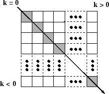

diag
Create diagonal matrix or get diagonal elements of matrix
Description
D = diag( returns
a square diagonal matrix with the elements of vector v)v on
the main diagonal.
Examples
Create a 1-by-5 vector.
v = [2 1 -1 -2 -5];
Use diag to create a matrix with the elements of v on the main diagonal.
D = diag(v)
D = 5×5
2 0 0 0 0
0 1 0 0 0
0 0 -1 0 0
0 0 0 -2 0
0 0 0 0 -5
Create a matrix with the elements of v on the first super diagonal (k=1).
D1 = diag(v,1)
D1 = 6×6
0 2 0 0 0 0
0 0 1 0 0 0
0 0 0 -1 0 0
0 0 0 0 -2 0
0 0 0 0 0 -5
0 0 0 0 0 0
The result is a 6-by-6 matrix. When you specify a vector of length n as an input, diag returns a square matrix of size n+abs(k).
Get the elements on the main diagonal of a random 6-by-6 matrix.
A = randi(10,6)
A = 6×6
9 3 10 8 7 8
10 6 5 10 8 1
2 10 9 7 8 3
10 10 2 1 4 1
7 2 5 9 7 1
1 10 10 10 2 9
x = diag(A)
x = 6×1
9
6
9
1
7
9
Get the elements on the first subdiagonal (k=-1) of A. The result has one fewer element than the main diagonal.
x1 = diag(A,-1)
x1 = 5×1
10
10
2
9
2
Calling diag twice returns a diagonal matrix composed of the diagonal elements of the original matrix.
A1 = diag(diag(A))
A1 = 6×6
9 0 0 0 0 0
0 6 0 0 0 0
0 0 9 0 0 0
0 0 0 1 0 0
0 0 0 0 7 0
0 0 0 0 0 9
Input Arguments
Diagonal elements, specified as a vector. If v is
a vector with N elements, then diag(v,k) is
a square matrix of order N+abs(k).
diag([]) returns an empty matrix, [].
Data Types: single | double | int8 | int16 | int32 | int64 | uint8 | uint16 | uint32 | uint64 | logical | char
Complex Number Support: Yes
Input matrix. diag returns an error if ndims(A)
> 2.
diag([]) returns an empty matrix, [].
Data Types: single | double | int8 | int16 | int32 | int64 | uint8 | uint16 | uint32 | uint64 | logical | char
Complex Number Support: Yes
Diagonal number, specified as an integer. k=0 represents
the main diagonal, k>0 is above the main diagonal,
and k<0 is below the main diagonal.
For an m-by-n matrix, k is in the
range . For example, for matrices with n greater than
m, the k=0 main diagonal consists of the elements with
indices (1,1), (2,2), ..., (m,m).
The k=1 above the main diagonal consists of the elements with indices
(1,2), (2,3), ..., (m,m+1). The
k=-1 below the main diagonal consists of the elements with indices
(2,1), (3,2), ..., (m,m-1).

Tips
The
traceof a matrix is equal tosum(diag(A)).
Extended Capabilities
Usage notes and limitations:
If you supply
k, then it must be a real and scalar integer value.For variable-size inputs that are variable-length vectors (1-by-: or :-by-1),
diag:Treats the input as a vector
Returns a matrix with the input vector along the specified diagonal
For variable-size inputs that are not variable-length vectors,
diag:Treats the input as a matrix
Does not support inputs that are vectors at run time
Returns a variable-length vector
If the input is variable-size (:m-by-:n) and has shape 0-by-0 at run time, then the output is 0-by-1, not 0-by-0. However, if the input is a constant size 0-by-0, then the output is
[].For variable-size inputs that are not variable-length vectors (1-by-: or :-by-1),
diagtreats the input as a matrix from which to extract a diagonal vector. This behavior occurs even if the input array is a vector at run time. To forcediagto build a matrix from variable-size inputs that are not 1-by-: or :-by-1, use:diag(x(:))instead ofdiag(x)diag(x(:),k)instead ofdiag(x,k)
Usage notes and limitations:
If you supply
k, then it must be a real and scalar integer value.For variable-size inputs that are variable-length vectors (1-by-: or :-by-1),
diag:Treats the input as a vector
Returns a matrix with the input vector along the specified diagonal
For variable-size inputs that are not variable-length vectors,
diag:Treats the input as a matrix
Does not support inputs that are vectors at run time
Returns a variable-length vector
If the input is variable-size (:m-by-:n) and has shape 0-by-0 at run time, then the output is 0-by-1, not 0-by-0. However, if the input is a constant size 0-by-0, then the output is
[].For variable-size inputs that are not variable-length vectors (1-by-: or :-by-1),
diagtreats the input as a matrix from which to extract a diagonal vector. This behavior occurs even if the input array is a vector at run time. To forcediagto build a matrix from variable-size inputs that are not 1-by-: or :-by-1, use:diag(x(:))instead ofdiag(x)diag(x(:),k)instead ofdiag(x,k)
This function fully supports thread-based environments. For more information, see Run MATLAB Functions in Thread-Based Environment.
The diag function
fully supports GPU arrays. To run the function on a GPU, specify the input data as a gpuArray (Parallel Computing Toolbox). For more information, see Run MATLAB Functions on a GPU (Parallel Computing Toolbox).
This function fully supports distributed arrays. For more information, see Run MATLAB Functions with Distributed Arrays (Parallel Computing Toolbox).
Version History
Introduced before R2006a